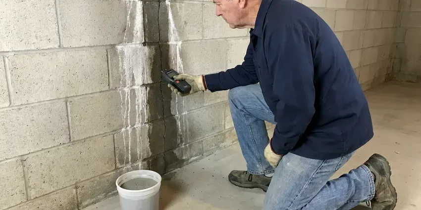

Plumbing Inspection in South Burlington, VT
Buying a home or chasing a high water bill in South Burlington, VT? Our plumbers inspect supply lines, drains, sewer and water heaters in one visit.
- Written Photo Reports
- Licensed, Experienced Plumbers
- Written Reports
- Quick Inspections
Schedule Your Plumbing Inspection in South Burlington, VT
CKV Plumbing ranks each finding so you know what to fix first.
Careful Plumbing Inspections for South Burlington, VT Homes
CKV Plumbing performs full plumbing inspections that cover supply pipe material, water pressure, fixtures, shutoff valves, water heaters, softeners, gas connections and the main sewer line. We run a camera through the sewer and test for leaks at the meter. You get photos and a priority list in writing, which makes it easy to see what needs work now and what can wait.
Some of what we do:
- Electronic leak detection
- Water heater, gas connection and fixture condition reviews
- Sewer camera inspection of drain lines

Additional Plumbing Maintenance Services in South Burlington, VT
Our maintenance and specialty plumbing services in South Burlington, VT catch small problems before they become emergencies.


Customers
Why Choose CKV Plumbing for Plumbing Inspection in South Burlington, VT?
Our reports include photos, video and estimated repair ranges. Buyers use them to negotiate, and owners use them to budget.
- Clear Priorities, Findings are ranked by urgency with realistic repair cost ranges.
- Water Quality, We check for scale on fixtures and heaters and tell you whether treatment makes sense.
- Camera Proof, We record sewer video so you can see roots, bellies or breaks yourself.
Citywide Coverage
Our plumbers inspect homes in every neighborhood of South Burlington, from older districts to new subdivisions. Every truck carries a sewer camera. That means a full inspection, with video, pressure readings and a meter leak test, happens in a single visit no matter where in town your house sits.
Experienced Team
The CKV Plumbing inspection team is licensed and insured. They use the right tools. Every plumber knows the camera, locator, thermal imager and pressure gauge, and more importantly knows how to interpret what they show.
Safety-First Approach
Code and safety concerns get clear notes in every report. We flag the urgent ones. Anything that poses a safety risk, like a gas leak or a backdrafting water heater, gets reported to you right away instead of waiting for the written report.
Trusted Certified South Burlington Plumbing Services Professionals
At CKV Plumbing, we are proud to offer certified plumbing services throughout South Burlington, VT. Those papers on the wall mean something. Every repair, install and maintenance visit follows strict safety and quality rules, and the plumbers doing the work carry recognized industry credentials.
Call Us Now PHCC Plumbing Contractor Recognition
PHCC Plumbing Contractor Recognition Better Business Bureau (BBB) Accreditation
Better Business Bureau (BBB) Accreditation Angi Certified Pro
Angi Certified Pro ISO 9001 Quality Management Certification
ISO 9001 Quality Management CertificationPlumbing Inspection Services in South Burlington, VT
Sewer Line Camera Inspections in South Burlington, VT
A sewer camera shows the inside of the main drain without digging. We push the camera in from a cleanout, watch for cracks, roots, offsets and low spots and record the whole run to the street or septic tank. We mark problem spots from above. Rocky glacial soil and ledge are common across Vermont, which can make digging for water lines, sewer repairs or septic work slow and costly.

Sewer Line Camera Inspection in South Burlington, VT
Older homes in South Burlington often have cast iron or clay sewer pipe that cracks, scales up or lets roots in at the joints. The camera records every defect along with its distance from the cleanout. We mark it on the ground. Knowing the depth and location means a repair estimate can be accurate, and it helps decide between a spot repair, a liner or a full replacement.
Leak Detection and Assessment in South Burlington, VT
Hidden leaks waste water and quietly damage floors and walls. Start at the meter. With all fixtures off, we watch the meter's leak indicator, then use acoustic listening gear and a thermal camera to trace the leak behind walls, under floors or in the slab. Early detection limits the damage. Rocky glacial soil and ledge are common across Vermont, which can make digging for water lines, sewer repairs or septic work slow and costly.
Pre-Purchase Inspection With Sewer Video in South Burlington
Plumbing problems are some of the most expensive surprises after closing. Our pre-purchase inspection covers the supply pipe type, the sewer condition on video, the water heater's age and every fixture. We send the report to your agent too. Buyers often use the findings to request repairs or credits, and the sewer video by itself can head off a very costly surprise.
Pre-Purchase Plumbing Report in South Burlington
Before buying a home in South Burlington, a plumber's inspection can keep you from inheriting a sewer replacement. Our report lists every finding with a photo, a plain description and a repair range, so your agent can use it in negotiations right away. Most buyers get it the same day. It fits tight closing schedules.
Whole-Home Plumbing Inspections in South Burlington
Our whole-home inspections focus on the problems we see most in Vermont houses. That list starts with old supply pipe, worn angle stops, aging water heaters, slow drains and sewer lines with roots or sags. We test each one directly. A corroded fitting or partial blockage found now will not become a ceiling stain or a holiday backup later.
Seasonal Plumbing Checks in South Burlington, VT
Heating systems, boilers and water heaters work hard through the winter, so annual service helps prevent breakdowns in the coldest weeks. A seasonal check looks at the parts of the system that weather affects most. Outdoor faucets, exposed pipe, irrigation backflow devices and the heater drain and relief valve all get checked. We look at pipe insulation. Fixing a cracked hose bibb or adding insulation is a small job compared to a burst pipe in the wall behind it.

Water Pressure and Supply Pipe Review in South Burlington, VT
We measure static water pressure and check the pressure reducing valve if one is installed. Too much pressure wears parts. Pressure above 80 psi shortens the life of fixtures, supply hoses and water heaters, and we also identify the supply pipe material, from copper and CPVC to polybutylene, Kitec and galvanized.
Plumbing Inspections Near You in South Burlington, VT
When you need a plumbing inspection near me on a tight real estate timeline, CKV Plumbing can often schedule within a day or two in South Burlington. Our trucks carry cameras, locators and pressure gauges, so the full inspection happens in one visit and the report follows quickly.
Local plumbers know which problems show up most in South Burlington homes. Local conditions shape the findings. We know where clay sewers with roots are common, which subdivisions used poly and where the pressure runs high.
CKV Plumbing at a Glance
- Licensed and insured plumbers serving South Burlington, VT
- 24/7 emergency service with same-day scheduling
- Upfront, flat-rate pricing before work begins
- 4.8-star rated by 553+ Vermont customers
South Burlington Map
South Burlington Information
- Population
- 21,043
- Area codes
- Local
- Service area
- South Burlington and towns within a 40 mile drive
- Nearby
- Shelburne, Winooski, Burlington, Essex Junction
A plumbing inspection in South Burlington, VT finds hidden leaks and sewer problems while they are still cheap to fix. Rocky glacial soil and ledge are common across Vermont, which can make digging for water lines, sewer repairs or septic work slow and costly.
Expert Services
Reach out to CKV Plumbing for reliable plumbing work done by licensed pros in South Burlington, VT.
Our Specialized Plumbing Services in South Burlington, VT
At CKV Plumbing, you get every kind of plumbing service from one company across South Burlington, VT. From leak detection to full system installs, our team works fast and charges fair prices on homes and commercial properties alike. Here are the core services we offer:


How a Plumbing Inspection Works in South Burlington, VT
Our inspections are thorough, efficient and easy to follow.
Schedule a Visit
Call (802) 209-5139 or fill out the form. We talk through what you want checked and set a time.
Walk the Property
Our plumber arrives at your South Burlington home and checks each fixture, exposed pipe and appliance.
Test and Record
We run the sewer camera, read pressure and test for leaks, including the heater and gas lines.
Frequently Asked Questions About Plumbing Inspection in South Burlington
Standard plumbing inspections usually cost $150 to $300. With the sewer camera, most totals land between $250 and $500.
A plumbing inspection is a deeper look at one system. General inspectors check basic function. A general home inspector runs faucets and flushes toilets, while our plumbers run sewer cameras, test pressure, identify pipe types and flag code issues that fall outside a general inspection.
Every inspection comes with a written report, photos and sewer video when included. Reports are ready the same day or the next business day.
Rising water bills, low pressure, discolored water, slow drains, sewer odors and warm spots on floors are all good reasons. Homes with original plumbing also benefit from one.
A standard home inspection takes about one and a half to three hours. Camera work takes longer. Larger homes, long sewer lines or a hidden leak that needs tracing can push it longer, and we will tell you the expected time when you book so you can plan around it.
Most homes do well with an inspection every one to two years. Buying a home is another time. Buyers, owners of older houses and anyone with recent leaks or backups benefit from yearly checks that catch problems sooner.
Our full inspection covers supply pipe, drains, fixtures, shutoff valves, the water heater, gas connectors and the sewer line. We read static pressure. A meter leak test, a check for slab leak signs and hard water damage and a look at any softener or filter are also included.
Often, yes. Several tests work together. A pressure test, moisture meter, thermal camera and a hunt for stains all help reveal hidden leaks, and early finds keep repairs small.
Hear From Customers Who Hired Our Plumbing Experts

Megan L.
Our upstairs tub drained so slowly that every shower turned into a bath. CKV Plumbing pulled a wad of hair out of the stopper and then snaked the line past the trap. Three months later it still drains fast.
Drain Cleaning · South Burlington, VT
Daniel K.
A pipe burst in the garage ceiling at 11 at night. Someone answered on the second ring, and the plumber was in my driveway about fifty minutes later. He shut off the main, cut out the split section, and had water back on before 2 am.
Emergency Plumbing · Middlebury, VT
Brian W.
I smelled gas behind the dryer and called right away. The plumber found a corroded flex connector, replaced it, and pressure tested the whole line before turning the gas back on. He let me watch the gauge hold steady for fifteen minutes.
Gas Line Repair · St. Albans, VT
James P.
Our restaurant had a slow leak at the hand sink that was rotting the cabinet base. CKV Plumbing came in at six in the morning before prep, replaced the trap and both supply lines, and was packed up before my first cook clocked in.
Commercial Plumbing · Middlebury, VT
Karen W.
After our third pinhole leak in copper, we stopped patching. CKV Plumbing gave us a written plan room by room and repiped the house in PEX while we stayed in it. The crew covered our floors every morning and cleaned up every night.
Repiping · Middlebury, VTTyler J.
We bought a taller comfort height toilet for my dad, who just had knee surgery. The plumber pulled the old one, found the flange was cracked, and replaced it before setting the new bowl. Took about two hours.
Toilet Installation · South Burlington, VT